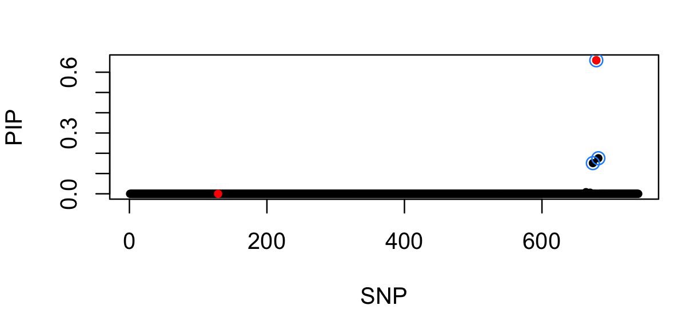
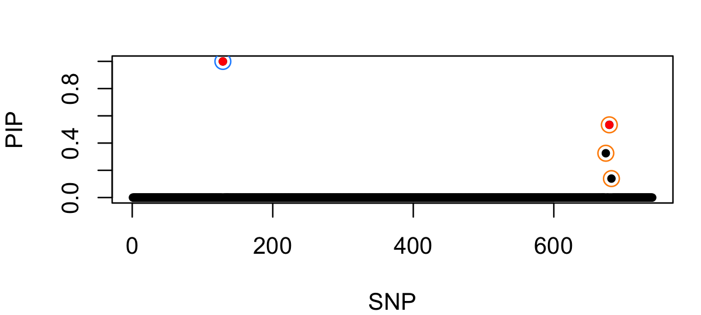
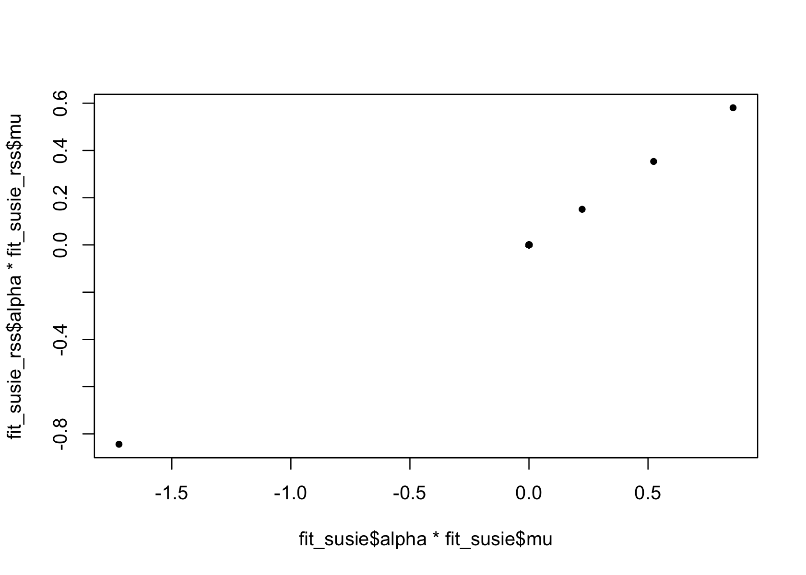

Design and implementation of SuSiE in the ebverse
Peter Carbonetto
Last updated: 2026-11-19
Checks: 7 0
Knit directory:
ebverse-workflowr/analysis/
This reproducible R Markdown analysis was created with workflowr (version 1.7.1). The Checks tab describes the reproducibility checks that were applied when the results were created. The Past versions tab lists the development history.
Great! Since the R Markdown file has been committed to the Git repository, you know the exact version of the code that produced these results.
Great job! The global environment was empty. Objects defined in the global environment can affect the analysis in your R Markdown file in unknown ways. For reproduciblity it’s best to always run the code in an empty environment.
The command set.seed(1) was run prior to running the
code in the R Markdown file. Setting a seed ensures that any results
that rely on randomness, e.g. subsampling or permutations, are
reproducible.
Great job! Recording the operating system, R version, and package versions is critical for reproducibility.
Nice! There were no cached chunks for this analysis, so you can be confident that you successfully produced the results during this run.
Great job! Using relative paths to the files within your workflowr project makes it easier to run your code on other machines.
Great! You are using Git for version control. Tracking code development and connecting the code version to the results is critical for reproducibility.
The results in this page were generated with repository version 6ba7562. See the Past versions tab to see a history of the changes made to the R Markdown and HTML files.
Note that you need to be careful to ensure that all relevant files for
the analysis have been committed to Git prior to generating the results
(you can use wflow_publish or
wflow_git_commit). workflowr only checks the R Markdown
file, but you know if there are other scripts or data files that it
depends on. Below is the status of the Git repository when the results
were generated:
working directory clean
Note that any generated files, e.g. HTML, png, CSS, etc., are not included in this status report because it is ok for generated content to have uncommitted changes.
These are the previous versions of the repository in which changes were
made to the R Markdown (analysis/susie_demo.Rmd) and HTML
(docs/susie_demo.html) files. If you’ve configured a remote
Git repository (see ?wflow_git_remote), click on the
hyperlinks in the table below to view the files as they were in that
past version.
| File | Version | Author | Date | Message |
|---|---|---|---|---|
| Rmd | 6ba7562 | Peter Carbonetto | 2026-11-19 | wflow_publish("susie_demo.Rmd", verbose = T, view = F) |
| Rmd | 8a86eb1 | Peter Carbonetto | 2026-11-19 | Added comparison of susie and susie_rss to check for equivalence. |
| html | fdcd982 | Peter Carbonetto | 2026-11-16 | Ran wflow_publish("susie_demo.Rmd"). |
| Rmd | 19017ff | Peter Carbonetto | 2026-11-16 | wflow_publish("susie_demo.Rmd", verbose = T, view = F) |
| Rmd | 7b03fc0 | Peter Carbonetto | 2026-11-16 | wflow_rename("ser_demo.Rmd","susie_demo.Rmd") |
| html | 7b03fc0 | Peter Carbonetto | 2026-11-16 | wflow_rename("ser_demo.Rmd","susie_demo.Rmd") |
Add text here.
Load the susieR and ebverse packages:
library(susieR)
library(ebverse)Set the seed to ensure that the results are reproducible:
set.seed(1)Add text here.
load(file.path(system.file(package="ebverse"),"datasets/jsm_data.RData"))
n <- nrow(X)
J <- ncol(X)
rownames(X) <- paste0("s",1:n)
names(y) <- paste0("s",1:n)
dim(X)
# [1] 574 740Multiply the quantitative trait by some arbitrary number just to make sure that the results are still valid when the variance of Y is not 1.
y <- 2*ySingle effect regression
Fit a single effect regression using the susieR package:
fit_susie <- susie(X,y,L = 1,standardize = FALSE)Add text here.
par(mar = c(4,4,2,1))
pips <- fit_susie$pip
plot(pips,pch = 20,xlab = "SNP",ylab = "PIP")
j <- fit_susie$sets$cs[[1]]
points(j,pips[j],pch = 1,col = "dodgerblue",cex = 1.25)
j <- which(b_true != 0)
points(j,pips[j],pch = 20,col = "red")
| Version | Author | Date |
|---|---|---|
| 7b03fc0 | Peter Carbonetto | 2026-11-16 |
Add text here.
X <- scale(X,center = TRUE,scale = FALSE)
y <- drop(scale(y,center = TRUE,scale = FALSE))
colnames(X) <- paste0("rs",1:J)
dat <- prepare_ser_data(X = X,y = y,residual_variance = fit_susie$sigma2)fit0 <- init_ser_model(colnames(X),control = list(verbose = "detailed"))
fit0$control$paramtol <- 1e-12
fit0$control$maxiter <- 2
fit_ser <- fit_ser_model(fit0,dat,return_data = TRUE)
fit_ser$control$maxiter <- 100
fit_ser <- fit_ser_model(fit_ser)
# parameter tolerance is met; model fitting is stopped
# iter log-Bayes factor sigma0 d(logBF) d(sigma0)
# ---- ---------------- -------- -------- ---------
# 1 +1.504472087e+02 03.1e+00 NA +2.08e+00
# 2 +1.509308682e+02 03.1e+00 +4.8e-01 +4.07e-02
# iter log-Bayes factor sigma0 d(logBF) d(sigma0)
# ---- ---------------- -------- -------- ---------
# 1 +1.509309117e+02 03.1e+00 +0.0e+00 +2.58e-04
# 2 +1.509309117e+02 03.1e+00 +1.7e-09 +1.61e-06
# 3 +1.509309117e+02 03.1e+00 +8.5e-14 +1.01e-08
# 4 +1.509309117e+02 03.1e+00 -2.8e-14 +6.30e-11
# 5 +1.509309117e+02 03.1e+00 +0.0e+00 +3.94e-13Add text there.
pm_susie <- fit_susie$alpha * fit_susie$mu
range(fit_susie$pip - fit_ser$posterior$pip)
range(pm_susie - fit_ser$posterior$mean)
cat("susie s0:",format(fit_susie$V,digits = 8),"\n")
cat("SER s0: ",format(fit_ser$prior$prior_variance,digits = 8),"\n")
cat("susie logBF:",format(fit_susie$lbf,digits = 10),"\n")
cat("SER logBF: ",format(fit_ser$lbf,digits = 10),"\n")
# [1] -4.502704e-12 1.187384e-11
# [1] -6.651667e-12 1.146228e-10
# susie s0: 3.1187971
# SER s0: 3.118797
# susie logBF: 150.9309227
# SER logBF: 150.9309117Add text here.
par(mar = c(4,4,2,1),mfrow = c(1,2))
plot(fit_susie$pip,fit_ser$posterior$pip,pch = 20,
xlab = "susieR",ylab = "ebverse",main = "PIPs")
abline(a = 0,b = 1,lty = "dotted",col = "magenta")
plot(pm_susie,fit_ser$posterior$mean,pch = 20,
xlab = "susieR",ylab = "ebverse",main = "posterior mean coefs")
abline(a = 0,b = 1,lty = "dotted",col = "magenta")
| Version | Author | Date |
|---|---|---|
| 7b03fc0 | Peter Carbonetto | 2026-11-16 |
SuSiE
Fit a single effect regression with L = 2 single effects using the susieR package:
fit_susie <- susie(X,y,L = 2,standardize = FALSE,verbose = TRUE)
fit_susie_ss <- susie_suff_stat(XtX = crossprod(X),
Xty = drop(crossprod(X,y)),
yty = drop(crossprod(y)),
n = n,L = 2,verbose = TRUE)
dat <- prepare_mlm_full_data(X,y,standardize = FALSE)
ss <- univariate_regression(X,y)
fit_susie_rss <- susie_rss(bhat = ss$betahat,
shat = ss$sebetahat,
R = cor(X),
L = 2,
verbose = TRUE)
# WARNING: Providing the sample size (n), or even a rough estimate of n, is highly recommended. Without n, the implicit assumption is n is large (Inf) and the effect sizes are small (close to zero).
fit_susie$KL - fit_susie$KL
# [1] "objective:-1077.45460190386"
# [1] "objective:-1013.42530241946"
# [1] "objective:-1011.05836894687"
# [1] "objective:-1011.03696168044"
# [1] "objective:-1011.03554845366"
# [1] "objective:-1011.03554818436"
# [1] "objective:-1011.03554764035"
# [1] "objective:-1077.45463241902"
# [1] "objective:-1013.42525358398"
# [1] "objective:-1011.05836730321"
# [1] "objective:-1011.03696179971"
# [1] "objective:-1011.03554882309"
# [1] "objective:-1011.03554855383"
# [1] "objective:-1011.03554800994"
# [1] "objective:202.38341768888"
# [1] "objective:203.487610219092"
# [1] "objective:203.487956395425"
# [1] 0 0Add text here.
par(mar = c(4,4,2,1))
pips <- fit_susie$pip
plot(pips,pch = 20,xlab = "SNP",ylab = "PIP")
j <- fit_susie$sets$cs[[1]]
points(j,pips[j],pch = 1,col = "dodgerblue",cex = 1.5)
j <- fit_susie$sets$cs[[2]]
points(j,pips[j],pch = 1,col = "darkorange",cex = 1.5)
j <- which(b_true != 0)
points(j,pips[j],pch = 20,col = "red")
| Version | Author | Date |
|---|---|---|
| fdcd982 | Peter Carbonetto | 2026-11-16 |
Fit a SuSiE model using the new interface. Also test refitting:
dat <- prepare_mlm_full_data(X,y)
fit_susie_eb <- init_susie_model(colnames(X),L = 2,
control = list(maxiter = 4,paramtol = 1e-8))
fit_susie_eb <- fit_susie_model(fit_susie_eb,dat,return_data = TRUE)
fit_susie_eb <- fit_susie_model(fit_susie_eb,dat,return_data = TRUE)
# parameter estimation tolerance is met; model fitting is stopped
# iter ELBO sigma d(ELBO) delta(b) d(pip) d(sigma)
# ---- ---------- ------- -------- -------- ------- --------
# 1 -1.083e+03 01.8701 NA 1.69e+00 1.0e+00 +8.7e-01
# 2 -1.011e+03 01.8638 +7.2e+01 8.09e-01 4.1e-01 -6.2e-03
# 3 -1.011e+03 01.8638 +2.1e-03 7.69e-03 4.6e-03 -9.6e-06
# 4 -1.011e+03 01.8638 +2.0e-07 1.63e-04 8.8e-05 +3.7e-07
# iter ELBO sigma d(ELBO) delta(b) d(pip) d(sigma)
# ---- ---------- ------- -------- -------- ------- --------
# 1 -1.011e+03 01.8638 +7.2e-11 3.09e-06 1.6e-06 +9.4e-09
# 2 -1.011e+03 01.8638 -1.1e-13 5.63e-08 3.0e-08 +1.8e-10
# 3 -1.011e+03 01.8638 -1.1e-13 1.02e-09 5.4e-10 +3.3e-12ADD TEXT HERE.
pm_susie <- fit_susie$alpha * fit_susie$mu
max(fit_susie$elbo) - fit_susie_eb$elbo
fit_susie$KL - sapply(fit_susie_eb$ser,"[[","KL")
fit_susie$sigma2 - fit_susie_eb$residual_variance
fit_susie_eb$ser[[1]]$prior$prior_variance - fit_susie$V[1]
fit_susie_eb$ser[[2]]$prior$prior_variance - fit_susie$V[2]
range(fit_susie_eb$ser[[1]]$posterior$pip - fit_susie$alpha[1,])
range(fit_susie_eb$ser[[2]]$posterior$pip - fit_susie$alpha[2,])
range(fit_susie_eb$ser[[1]]$posterior$mean - pm_susie[1,])
range(fit_susie_eb$ser[[2]]$posterior$mean - pm_susie[2,])
# [1] 2.20534e-05
# L1 L2
# -8.662328e-06 -1.112563e-05
# [1] -3.415064e-07
# [1] -5.229721e-06
# [1] 1.061259e-06
# [1] -2.733562e-06 2.800287e-06
# [1] -2.091066e-09 2.095204e-09
# [1] -5.229436e-06 4.011406e-06
# [1] -3.065367e-07 4.724679e-13Test init_susie_model and fit_susie_model
with \(L = 1\).
fit_susie <- susie(X,y,L = 1,standardize = FALSE,tol = 1e-8)
fit_susie_eb_l1 <- init_susie_model(colnames(X),L = 1)
fit_susie_eb_l1 <- fit_susie_model(fit_susie_eb_l1,dat,return_data = TRUE)
# parameter estimation tolerance is met; model fitting is stopped
fit_susie$lbf - fit_susie_eb_l1$lbf
max(fit_susie$elbo) - max(fit_susie_eb_l1$elbo)
range(fit_susie$pip - fit_susie_eb_l1$ser[[1]]$posterior$pip)
# iter ELBO sigma d(ELBO) delta(b) d(pip) d(sigma)
# ---- ---------- ------- -------- -------- ------- --------
# 1 -1.272e+03 02.5600 NA 0.00e+00 9.5e-01 +1.6e+00
# 2 -1.094e+03 02.5667 +1.8e+02 0.00e+00 2.9e-01 +6.7e-03
# 3 -1.094e+03 02.5667 +9.9e-04 0.00e+00 9.1e-04 +2.8e-05
# 4 -1.094e+03 02.5667 +1.7e-08 0.00e+00 3.8e-06 +1.2e-07
# 5 -1.094e+03 02.5667 +2.3e-13 0.00e+00 1.6e-08 +4.8e-10
# [1] 1.096974e-05
# [1] 1.10268e-05
# [1] -3.368816e-11 4.823111e-11SuSiE with summary data
Compute the single-SNP summary statistics:
ss <- data.frame(bhat = rep(0,J),shat = rep(0,J))
rownames(ss) <- colnames(X)
for (j in 1:J) {
x <- X[,j]
res <- lm(y ~ x)
ss[j,"bhat"] <- summary(res)$coefficients["x","Estimate"]
ss[j,"shat"] <- summary(res)$coefficients["x","Std. Error"]
}
R <- cor(X)Compare fit_susie and fit_susie_rss:
fit_susie <- susie(X,y,L = 2,standardize = FALSE,verbose = TRUE)
fit_susie_rss <- susie_rss(bhat = ss$bhat,shat = ss$shat,R = R,
n = n,var_y = var(y),L = 2,
estimate_residual_variance = TRUE,
estimate_prior_variance = TRUE,
verbose = TRUE)
# HINT: For estimate_residual_variance = TRUE, please check that R is the "in-sample" LD matrix; that is, the correlation matrix obtained using the exact same data matrix X that was used for the other summary statistics. Also note, when covariates are included in the univariate regressions that produced the summary statistics, also consider removing these effects from X before computing R.
range(fit_susie$pip - fit_susie_rss$pip)
fit_susie$sigma2 - fit_susie_rss$sigma2
max(fit_susie_rss$elbo) - max(fit_susie$elbo)
plot(fit_susie$alpha * fit_susie$mu,
fit_susie_rss$alpha * fit_susie_rss$mu,
pch = 20)
# [1] "objective:-1077.45460190386"
# [1] "objective:-1013.42530241946"
# [1] "objective:-1011.05836894687"
# [1] "objective:-1011.03696168044"
# [1] "objective:-1011.03554845366"
# [1] "objective:-1011.03554818436"
# [1] "objective:-1011.03554764035"
# [1] "objective:-1077.4546324322"
# [1] "objective:-1013.42525361093"
# [1] "objective:-1011.05836730381"
# [1] "objective:-1011.0369618"
# [1] "objective:-1011.03554882309"
# [1] "objective:-1011.03554855383"
# [1] "objective:-1011.03554800994"
# [1] -9.442058e-07 7.848824e-07
# [1] 2.794682e-08
# [1] -3.695853e-07Now run SuSiE with summary statistics using the new interface:
bhat <- setNames(ss$bhat,rownames(ss))
sehat <- setNames(ss$shat,rownames(ss))
dat_ss <- prepare_mlm_summary_data(R = R,bhat = bhat,sehat = sehat,
n = n,var_y = var(y))
fit_susie_ss_eb <- init_susie_model(colnames(X),L = 2,
control = list(paramtol = 1e-8))
fit_susie_ss_eb <- fit_susie_model(fit_susie_ss_eb,dat_ss,return_data = TRUE)
# parameter estimation tolerance is met; model fitting is stopped
# iter ELBO sigma d(ELBO) delta(b) d(pip) d(sigma)
# ---- ---------- ------- -------- -------- ------- --------
# 1 -1.083e+03 01.8701 NA 1.69e+00 1.0e+00 +8.7e-01
# 2 -1.011e+03 01.8638 +7.2e+01 8.09e-01 4.1e-01 -6.2e-03
# 3 -1.011e+03 01.8638 +2.1e-03 7.69e-03 4.6e-03 -9.6e-06
# 4 -1.011e+03 01.8638 +2.0e-07 1.63e-04 8.8e-05 +3.7e-07
# 5 -1.011e+03 01.8638 +7.2e-11 3.09e-06 1.6e-06 +9.4e-09
# 6 -1.011e+03 01.8638 -1.1e-13 5.63e-08 3.0e-08 +1.8e-10
# 7 -1.011e+03 01.8638 +0.0e+00 1.02e-09 5.4e-10 +3.3e-12Check that the SuSiE fits using the individual-level data and using the summary data give the same result:
range(fit_susie_eb$progress - fit_susie_ss_eb$progress,na.rm = TRUE)
fit_susie_eb$residual_variance - fit_susie_ss_eb$residual_variance
fit_susie_eb$ser[[1]]$prior$prior_variance -
fit_susie_ss_eb$ser[[1]]$prior$prior_variance
fit_susie_eb$ser[[2]]$prior$prior_variance -
fit_susie_ss_eb$ser[[2]]$prior$prior_variance
range(fit_susie_eb$ser[[1]]$posterior$pip
- fit_susie_ss_eb$ser[[1]]$posterior$pip)
range(fit_susie_eb$ser[[2]]$posterior$pip
- fit_susie_ss_eb$ser[[2]]$posterior$pip)
range(fit_susie_eb$ser[[1]]$posterior$mean
- fit_susie_ss_eb$ser[[1]]$posterior$mean)
range(fit_susie_eb$ser[[2]]$posterior$mean
- fit_susie_ss_eb$ser[[2]]$posterior$mean)
# [1] -2.273737e-12 3.865352e-12
# [1] -1.398881e-14
# [1] 1.731948e-14
# [1] 3.819167e-14
# [1] -1.982858e-13 1.351141e-13
# [1] -1.149688e-15 1.332268e-15
# [1] -3.187173e-13 2.206013e-13
# [1] -1.310063e-14 6.052315e-20
sessionInfo()
# R version 4.3.3 (2024-02-29)
# Platform: aarch64-apple-darwin20 (64-bit)
# Running under: macOS 26.5.2
#
# Matrix products: default
# BLAS: /System/Library/Frameworks/Accelerate.framework/Versions/A/Frameworks/vecLib.framework/Versions/A/libBLAS.dylib
# LAPACK: /Library/Frameworks/R.framework/Versions/4.3-arm64/Resources/lib/libRlapack.dylib; LAPACK version 3.11.0
#
# locale:
# [1] en_US.UTF-8/en_US.UTF-8/en_US.UTF-8/C/en_US.UTF-8/en_US.UTF-8
#
# time zone: America/Chicago
# tzcode source: internal
#
# attached base packages:
# [1] stats graphics grDevices utils datasets methods base
#
# other attached packages:
# [1] ebverse_0.1-95 susieR_0.14.4
#
# loaded via a namespace (and not attached):
# [1] sass_0.4.10 generics_0.1.4 stringi_1.8.7
# [4] lattice_0.22-5 digest_0.6.37 magrittr_2.0.3
# [7] evaluate_1.0.4 grid_4.3.3 RColorBrewer_1.1-3
# [10] fastmap_1.2.0 rprojroot_2.1.1 workflowr_1.7.1
# [13] plyr_1.8.9 jsonlite_2.0.0 Matrix_1.6-5
# [16] whisker_0.4.1 reshape_0.8.9 mixsqp_0.3-54
# [19] promises_1.3.3 scales_1.4.0 jquerylib_0.1.4
# [22] cli_3.6.5 rlang_1.1.6 crayon_1.5.3
# [25] cachem_1.1.0 yaml_2.3.10 tools_4.3.3
# [28] parallel_4.3.3 dplyr_1.1.4 ggplot2_3.5.2
# [31] httpuv_1.6.14 Rfast_2.1.0 RcppZiggurat_0.1.6
# [34] vctrs_0.6.5 R6_2.6.1 matrixStats_1.2.0
# [37] lifecycle_1.0.5 git2r_0.33.0 stringr_1.5.1
# [40] fs_1.6.6 irlba_2.3.5.1 pkgconfig_2.0.3
# [43] RcppParallel_5.1.10 pillar_1.11.0 bslib_0.9.0
# [46] later_1.4.2 gtable_0.3.6 glue_1.8.0
# [49] Rcpp_1.1.0 xfun_0.52 tibble_3.3.0
# [52] tidyselect_1.2.1 knitr_1.50 dichromat_2.0-0.1
# [55] farver_2.1.2 htmltools_0.5.8.1 rmarkdown_2.29
# [58] compiler_4.3.3